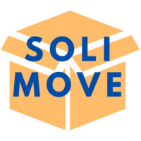

<!DOCTYPE html>
<html lang="en">
  <head>
    <meta charset="UTF-8" />
    <meta name="viewport" content="width=device-width, initial-scale=1.0" />
    <title>Brooke Owens Application - Rebeca Lou Lachenaud</title>
    <!-- Background audio (controlled via the custom small button) -->
    <audio id="bg-audio" preload="auto">
      <source src="soundscape.mp3" type="audio/mpeg">
      Your browser does not support the audio element.
    </audio>

    <style>
      h1 {text-align: justify;}
      p {text-align: justify;}
      div {text-align: center;}
      /* Rocket emoji cursor (SVG data URI) */
      body, canvas {
        cursor: url("data:image/svg+xml;utf8,%3Csvg xmlns='http://www.w3.org/2000/svg' width='32' height='32'%3E%3Ctext x='0' y='24' font-size='24'%3E%F0%9F%9A%80%3C/text%3E%3C/svg%3E") 16 16, auto;
      }

      canvas { display: block; }
      /* Modal overlay that contains instructions and information when sone or planets are clicked */
      .modal-overlay {
        position: fixed;
        inset: 0;
        display: none; /* shown when needed */
        align-items: center;
        justify-content: center;
        background: rgba(0,0,0,0.55);
        z-index: 9999;
        pointer-events: auto;
      }

      .modal-overlay.active { display: flex; }

      .modal-box {
        background: rgba(10,10,10,0.95);
        color: #fff;
        padding: 18px 20px;
        border-radius: 10px;
        max-width: 560px;
        width: calc(100% - 48px);
        box-shadow: 0 8px 30px rgba(0,0,0,0.6);
        font-family: Cambria, arial;
      }

      .modal-title { font-size: 28px; margin-bottom: 8px; align-content: center; }
      .modal-text { font-size: 17px; line-height: 1.4; }
      /* Small circular music control button (created by script) */
      #music-btn {
        position: fixed;
        right: 12px;
        bottom: 12px;
        width: 40px;
        height: 40px;
        border-radius: 50%;
        border: none;
        background: linear-gradient(135deg,#1e90ff,#483d8b);
        color: #fff;
        font-size: 16px;
        display:flex;
        align-items:center;
        justify-content:center;
        box-shadow:0 6px 18px rgba(0,0,0,0.35);
        z-index:10000;
        cursor:pointer;
      }
      #music-btn.playing { transform: scale(1.05); }
    </style>

  </head>

  <body>
    <script type="module">
      import * as THREE from 'https://cdn.jsdelivr.net/npm/three@0.164/build/three.module.js';

      // Scene, camera, renderer
      const scene = new THREE.Scene();
      const camera = new THREE.PerspectiveCamera(60, window.innerWidth / window.innerHeight, 0.1, 1000);
      const renderer = new THREE.WebGLRenderer({ antialias: true });
      renderer.setSize(window.innerWidth, window.innerHeight);
      document.body.appendChild(renderer.domElement);
    
      // Create modal overlay element and append to body
      const modalOverlay = document.createElement('div');
      modalOverlay.className = 'modal-overlay';
      modalOverlay.innerHTML = `
        <div class="modal-box" role="dialog" aria-modal="true">
          <div class="modal-title"></div>
          <div class="modal-text"></div>
        </div>
      `;
      document.body.appendChild(modalOverlay);

      function showModal(title, htmlText) {
        const titleEl = modalOverlay.querySelector('.modal-title');
        const textEl = modalOverlay.querySelector('.modal-text');
        if (titleEl) titleEl.textContent = title || '';
        if (textEl) textEl.innerHTML = htmlText || '';
        modalOverlay.classList.add('active');
      }

      function closeModal() {
        modalOverlay.classList.remove('active');
      }

      // Show instructions modal immediately on load
      showModal('Instructions', '<p> I am answering the prompt: <strong>Tell us about a time you showed up in service to your community. What was the impact, and what did the experience teach you about your role in a community or team?</strong></p> <hr><p> How this website is structured: <ul> <li><p> Click on the star at the center of the system to start (a pop-up where I tell my story will appear) </p></il> <li><p> Click each of the 5 planets successively, from inside the system to outside, to read about my experience </p></il> </ul></p> <hr> Click outside this panel or press <strong>Esc</strong> to close.');

      // Click outside modal box closes
      modalOverlay.addEventListener('pointerdown', (e) => {
        // if click happened on the overlay (not inside .modal-box), close
        if (e.target === modalOverlay) closeModal();
      });

      // Close on Escape
      window.addEventListener('keydown', (e) => {
        if (e.key === 'Escape') closeModal();
      });


      // Raycaster + mouse for detecting clicks on objects
      const raycaster = new THREE.Raycaster();
      const mouse = new THREE.Vector2();
      
      // Helper: given an intersected object, walk up parents until we find a clickable object
      function findClickableFromIntersect(obj) {
        while (obj) {
          if (typeof clickableObjects !== 'undefined' && clickableObjects.includes(obj)) return obj;
          obj = obj.parent;
        }
        return null;
      }

      // Pointer (click) handler: translate event to NDC, cast a ray, check intersection
      renderer.domElement.addEventListener('pointerdown', (event) => {
        const rect = renderer.domElement.getBoundingClientRect();
        mouse.x = ((event.clientX - rect.left) / rect.width) * 2 - 1;
        mouse.y = -((event.clientY - rect.top) / rect.height) * 2 + 1;

        raycaster.setFromCamera(mouse, camera);
        const intersects = raycaster.intersectObjects(clickableObjects, true);
        if (intersects.length > 0) {
          const picked = intersects[0].object;
          const clickable = findClickableFromIntersect(picked) || picked;
          const content = (clickable.userData && clickable.userData.content) || '<p>No information available.</p>';
          // find index in clickableObjects to pick the title from the titles array
          const idx = clickableObjects.indexOf(clickable);
          const title = (typeof idx === 'number' && idx >= 0 && titles[idx]) ? titles[idx] : 'Object';
          showModal(title, content);
        }
      });


      // Pointer move: change cursor to pointer when hovering the sun and set hover flag
      renderer.domElement.addEventListener('pointermove', (event) => {
        const rect = renderer.domElement.getBoundingClientRect();
        mouse.x = ((event.clientX - rect.left) / rect.width) * 2 - 1;
        mouse.y = -((event.clientY - rect.top) / rect.height) * 2 + 1;

        raycaster.setFromCamera(mouse, camera);
        const intersects = raycaster.intersectObjects(clickableObjects, true);
        // clear previous planet hover flags
        planets.forEach(p => { if (p.userData) p.userData.hover = false; });
        sun.userData.hover = false;
        if (intersects.length > 0) {
          renderer.domElement.style.cursor = 'pointer';
          const picked = intersects[0].object;
          const clickable = findClickableFromIntersect(picked) || picked;
          if (clickable === sun) {
            sun.userData.hover = true;
          } else if (planets.includes(clickable)) {
            clickable.userData.hover = true;
          }
        } else {
          // Clear inline style to fall back to page cursor (rocket emoji)
          renderer.domElement.style.cursor = '';
        }
      });


      // Starfield background (simple point cloud, randomly distributed)
      const starsGeometry = new THREE.BufferGeometry();
      const starCount = 2000;
      const starPositions = new Float32Array(starCount * 3);
      for (let i = 0; i < starCount * 3; i++) {
        starPositions[i] = (Math.random() - 0.5) * 1000;
      }
      starsGeometry.setAttribute('position', new THREE.BufferAttribute(starPositions, 3));
      const starsMaterial = new THREE.PointsMaterial({ color: 0xffffff, size: 0.5 });
      const starField = new THREE.Points(starsGeometry, starsMaterial);
      scene.add(starField);


      // Lighting
      const sunLight = new THREE.PointLight(0xffffff, 200, 2000);
      scene.add(sunLight);
      const ambient = new THREE.AmbientLight(0x222222, 5);
      scene.add(ambient);

      /*
      Sun
      */

      const loader = new THREE.TextureLoader();
      const glowTexture = loader.load('https://threejs.org/examples/textures/lava/lavatile.jpg');
      glowTexture.wrapS = glowTexture.wrapT = THREE.RepeatWrapping;

      const sunMaterial = new THREE.MeshStandardMaterial({
        map: glowTexture,
        emissive: 0xffaa00,
        emissiveMap: glowTexture,
        emissiveIntensity: 4,
        roughness: 0.4
      });
      const sun = new THREE.Mesh(new THREE.SphereGeometry(1.8, 64, 64), sunMaterial);
      scene.add(sun);

      // initialize sun userData for hover behavior
      sun.userData = sun.userData || {};
      sun.userData.hover = false;
      sun.userData.baseEmissive = (sun.material && sun.material.emissiveIntensity) || 4;
      sun.userData.baseScale = 1.4;

      // Content for sun and planets (edit these strings to change modal content)
      const sunContent = '<p>  I am a volunteer in <strong>SoliMove</strong>, an organisation based in Paris whose purpose is to help women who have suffered violence inflicted by their partners, as well as their children. In particular, I take part in helping them move out of their abusive households and into their new, safe homes.</p>';
      const planetContents = [
        '<p>Moving out represents a new beginning for women who have sometimes been stuck for many years. It is not an easy step to take. Not having the ressources to hire proffessionals for the move can make them put it off. We are there to show them that they can do it by taking a weight off their shoulders and transporting all of their belongings for free, and collaborating with the police whenever necessary.</p>',
        '<p>Besides the practical assistance, we provide reassurance; we help them understand that they are worth a new beginning, and that they are not to blame for their situation. In other words, we are there to show that people care, and to help them get things off their chest if they need to.</p>',
        '<p>Getting a fridge up the stairs in an old parisian building is no easy job, and one cannot do it alone! What would seem so daunting to do on your own turns into something manageable when you do it together. This experience has helped me understand that as a group we can be more than the sum of each part. I have learnt the power communities have when working for important causes.</p>',
        '<p>What could be a mundane morning to you could mean the world to somebody else. It is noticeable in the eyes of the people we help that we are contributing to give¡ing them hope for a better future. It is heartwarming to see the smiles in the women and children\'s faces simply by showing up. When we come together we can change the world, even if it is one step at a time.</p>',
        '<p>I plan on staying involved with this organisation, as volunteering in <strong>SoliMove</strong> has been extremely meaningful and rewarding. More generally, I am committed to keep seizing opportunities to contribute to my community, by giving back in any way I can. <hr> Thank you for your time and attention!</p>'
      ];
      // Titles for sun and planets (edit these to change modal titles)
      const planetTitles = [
        'Point #1 - Allowing for a fresh start',
        'Point #2 - Helping people feel cared for',
        'Point #3 - Teamwork',
        'Point #4 - Lessons learnt',
        'Point #5 - Prospects for the future'
      ];
      sun.userData.content = sunContent;


      // Simple colored planets
      const planetColors = [0x3377ff, 0xff5533, 0xffaa33, 0xaaaaaa, 0x33ccff];
      const orbitRadii = [4, 7, 12, 15, 19];
      const orbitSpeeds = [0.005, 0.003, 0.0035, 0.001, 0.002];

      const planets = planetColors.map((color, i) => {
        const geometry = new THREE.SphereGeometry(0.6 + i * 0.1, 48, 48);
        const material = new THREE.MeshStandardMaterial({ color });
        const planet = new THREE.Mesh(geometry, material);
        scene.add(planet);
        // attach modal content to the planet mesh
        planet.userData = planet.userData || {};
        planet.userData.content = planetContents[i] || '<p>No info</p>';
        return planet;
      });

      // list of clickable objects (sun + planets)
      const clickableObjects = [sun, ...planets];
      // Titles array aligns with clickableObjects: index 0 = Sun, 1..n = planets
      const titles = ['Helping Victims of Domestic Abuse and their Children', ...planetTitles];

      // Camera setup
      camera.position.set(0, 10, 30);
      camera.lookAt(sun.position)
      sunLight.position.copy(sun.position);

      // Animation
      let angles = new Array(planets.length).fill(0);

      function animate() {
        requestAnimationFrame(animate);

        glowTexture.offset.x += 0.0015;
        glowTexture.offset.y += 0.0009;
        // Smooth hover grow + glow
        if (sun && sun.material) {
          const baseEmissive = sun.userData.baseEmissive || 4;
          const hoverEmissive = baseEmissive + 6; // how much brighter on hover
          const targetEmissive = sun.userData.hover ? hoverEmissive : baseEmissive;
          // lerp emissiveIntensity
          sun.material.emissiveIntensity = THREE.MathUtils.lerp(sun.material.emissiveIntensity || baseEmissive, targetEmissive, 0.12);

          // scale lerp
          const baseScale = sun.userData.baseScale || 1;
          const hoverScale = baseScale + 0.22; // how much bigger on hover
          const targetScale = sun.userData.hover ? hoverScale : baseScale;
          const currentScale = sun.scale.x || baseScale;
          const newScale = THREE.MathUtils.lerp(currentScale, targetScale, 0.12);
          sun.scale.set(newScale, newScale, newScale);
        }

        planets.forEach((planet, i) => {
          angles[i] += orbitSpeeds[i];
          planet.position.x = orbitRadii[i] * Math.cos(angles[i]);
          planet.position.z = orbitRadii[i] * Math.sin(angles[i]);
          planet.position.y = Math.sin(angles[i] * 0.6) * 0.3;
          planet.rotation.y += 0.01;
          // smooth hover scale for planets
          const pBase = planet.userData && planet.userData.baseScale ? planet.userData.baseScale : 1;
          const pHoverScale = pBase + 0.18;
          const pTarget = (planet.userData && planet.userData.hover) ? pHoverScale : pBase;
          const cur = planet.scale.x || pBase;
          const next = THREE.MathUtils.lerp(cur, pTarget, 0.14);
          planet.scale.set(next, next, next);
        });

        renderer.render(scene, camera);
      }
      

      animate();

      // Handle resizing
      window.addEventListener('resize', () => {
        camera.aspect = window.innerWidth / window.innerHeight;
        camera.updateProjectionMatrix();
        renderer.setSize(window.innerWidth, window.innerHeight);
      });


      // --- Small music button wired to #bg-audio ---
      (function setupMusicButton(){
        const audio = document.getElementById('bg-audio');
        if (!audio) return;
        audio.loop = true;
        audio.volume = 0.22;

        const btn = document.createElement('button');
        btn.id = 'music-btn';
        btn.title = 'Toggle music';
        btn.innerHTML = '🔈';
        document.body.appendChild(btn);

        function update() {
          if (!audio.paused) {
            btn.classList.add('playing');
            btn.innerHTML = '🔊';
          } else {
            btn.classList.remove('playing');
            btn.innerHTML = '🔈';
          }
        }

        btn.addEventListener('click', () => {
          if (audio.paused) {
            audio.play().catch(() => {});
          } else {
            audio.pause();
          }
          setTimeout(update, 50);
        });

        // update when playback state changes
        audio.addEventListener('play', update);
        audio.addEventListener('pause', update);
        audio.addEventListener('ended', update);

        // initial state
        update();
      })();

    </script>
  </body>
</html>
